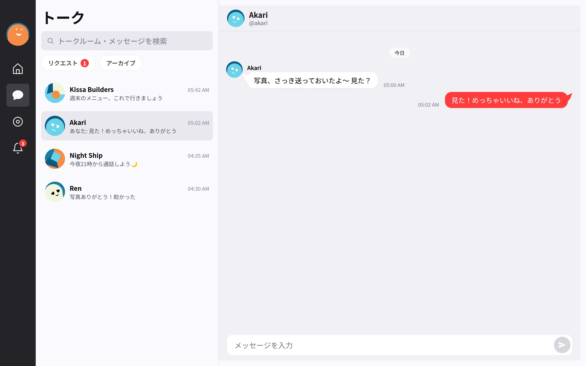
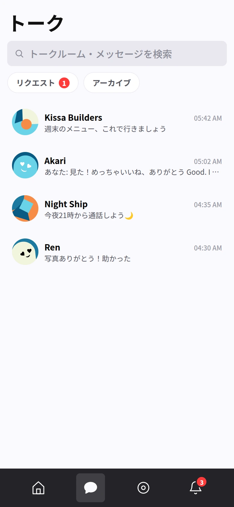

ホーム
友だち・グループ・Story を、ひとつの入口にまとめる。

メッセンジャーに欲しいものは、ぜんぶそろっています。yurumeet はそれを、トークを主役にした一枚の画面にまとめます。
友だち・グループ・Story を、ひとつの入口にまとめる。
DM とコミュニティチャットを、吹き出し主体の画面で。
投稿を、yurumeet の流れで読む・書く。
開いて、リアクションして、そのまま共有する。
スマホでも、同じトーク。ホーム画面から開いて、DM もグループもタイムラインも Story も、片手で。

yurumeet は、中央のサービスに預けるアプリではありません。自分のインフラに置いて、アカウントもトークも自分の手元に。中身はぜんぶオープンなので、確認して、必要なら自分で変えられます。
yurumeet は中央でホストされるアプリではありません。Takosumiで管理しながら、自分の環境にデプロイします。Cloudflareへの直接デプロイも選べます。
Takosumiでの管理付き導入を主導線として案内しています。
Cloudflareへの直接deployも現在利用できます。Takosumiで本番Applyするにはimmutable
releaseが必要です。
yurumeet.com はこの紹介サイトです。
実際に動く yurumeet
は、あなたが選んだ場所にデプロイした実行環境のほうです。このページ自体はアプリではありません。
# managed install Takosumi: Git URL / ref / path # direct alternative bun install bun run deploy
OpenTofu CapsuleとしてPlan、Apply、StateVersion、Output、Auditまで管理する。
Deployボタン、またはbun run deployでUIとcore
backendを 1つのWorkerとして公開する。
自分のサーバーのアカウントでログインして、トーク中心の UI を開く。